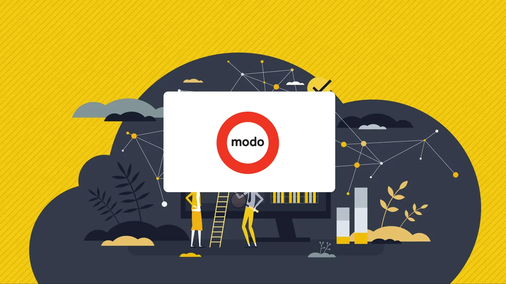

TRANSPORTATION
Modernizing analytics at Modo Carshare
Modo's leadership had to ask one person for every new visualization. I recommended a BI tool, designed a data warehouse and built the reports so they can ask deeper questions themselves.

The situation
Modo's leadership team relied on a mix of Grafana for a set of prepared visualizations, data exports from an internal platform, and Excel. Getting a new visualization made meant asking the one person who managed the database and wrote its reports, and that request process was a recognized pain point. The analysis available was mostly surface level, and leadership wanted to ask deeper questions without waiting in a queue.
What I did
1. Recommended the BI tool. I compared three options that all fit Modo's budget: Data Studio (formerly Looker Studio), Power BI and Metabase. I recommended Power BI for two reasons. It has a semantic layer that lets leadership run their own analysis, which the other two lacked, and it fits Modo's existing Microsoft 365 environment.
2. Designed the data warehouse. Modo needed to keep an on-premise PostgreSQL database, which matched their operational database and the skills of their database administrator. I designed a star schema based on a long list of business questions gathered from the team. Its primary source is Modo's operational database, supplemented by external Excel sheets containing forecast data. Modo's database administrator built the reporting layer Power BI connects to.
3. Built the reports. I built 13 interactive Power BI reports containing 72 data visualizations in total. They cover:
- Membership growth trends, movement, dormancy, churn and activity
- Membership demand health
- Winback targeting for marketing
- Fleet utilization, fleet model class and fleet capacity
- Booking demand gap
The reports are used by finance, operations, marketing, business development and customer service.
4. Made it maintainable. I also built a searchable data dictionary to accompany the reports. To let Modo expand the work after the engagement, I provided personalized training for their database administrator, along with onboarding and external training resources for the team.
What was delivered
- A data warehouse designed around Modo's own business questions
- 13 interactive reports and 72 visualizations serving five departments
- A searchable data dictionary
- Training and resources so Modo can build further reports without outside help
POWER BI REPORTS
VISUALIZATIONS
DEPARTMENTS